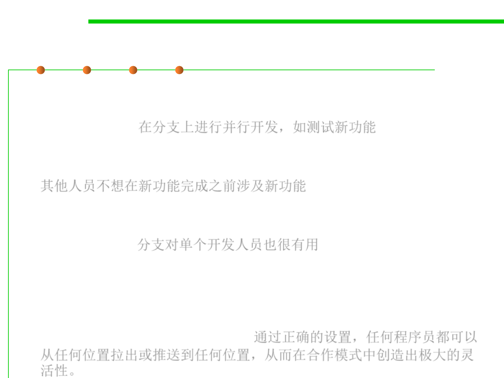

Branches
2.1 Software Lifecycle and Configuration Management
▪ It sometimes makes sense for a subset of the developers to go off and
work on a branch, a parallel code universe for, say, experimenting with
a new feature. 在分支上进行并行开发，如测试新功能
▪ The other developers don’t want to pull in the new feature until it is
done, even if several coordinated versions are created in the meantime.
其他人员不想在新功能完成之前涉及新功能
▪ Even a single developer can find it useful to create a branch, for the
same reasons that Alice was originally using the cloud server despite
working alone. 分支对单个开发人员也很有用
▪ In general, it will be useful to have many shared places for exchanging
project state. There may be multiple branch locations at once, each
shared by several programmers. With the right set-up, any
programmer can pull from or push to any location, creating serious
flexibility in cooperation patterns. 通过正确的设置，任何程序员都可以
从任何位置拉出或推送到任何位置，从而在合作模式中创造出极大的灵
活性。